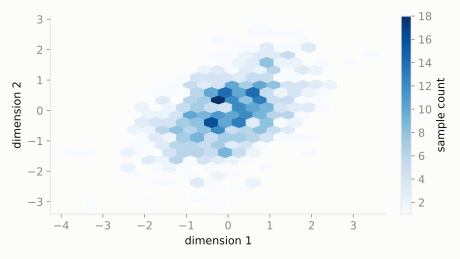

Multivariate
Multivariate Normal
scipy.stats.multivariate_normal
Intuition
Normal in more than one dimension at once, where the variables can wobble together instead of independently -- the covariance matrix says both how spread out each one is, and how much they lean in the same direction as each other.
Formula
\[ f(\mathbf{x}) = \frac{1}{\sqrt{(2\pi)^k|\Sigma|}} \exp\!\left(-\tfrac{1}{2}(\mathbf{x}-\mu)^T \Sigma^{-1} (\mathbf{x}-\mu)\right) \]
| parameter | default used here | meaning |
|---|
mean | [0, 0] | center point in each dimension |
cov | [[1, 0.5], [0.5, 1]] | covariance matrix (spread and correlation) |
Use cases
- Correlated returns of multiple assets in a financial portfolio
- Sensor noise modeling in robotics and tracking
- Gaussian mixture models and Gaussian processes in machine learning
A funny example
A dart robot's arm wobbles left-right and up-down like before, but this time a shaky elbow means when it drifts left it also tends to drift up a little -- the two wobbles aren't quite independent.
What's the relative density of darts landing near the point (1, 1) compared to landing exactly on the bullseye (0, 0)?
Solve it with scipy.stats
import scipy.stats as stats
import numpy as np
dist = stats.multivariate_normal(mean=[0, 0], cov=[[1, 0.5], [0.5, 1]])
print('density at (1,1):', round(dist.pdf([1, 1]), 4))
print('density at (0,0):', round(dist.pdf([0, 0]), 4))
density at (1,1): 0.0944
density at (0,0): 0.1838

Theoretical shape at the default parameters above (blue = density/PMF, orange = CDF).